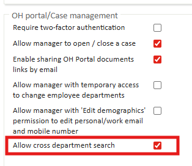
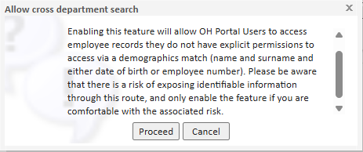
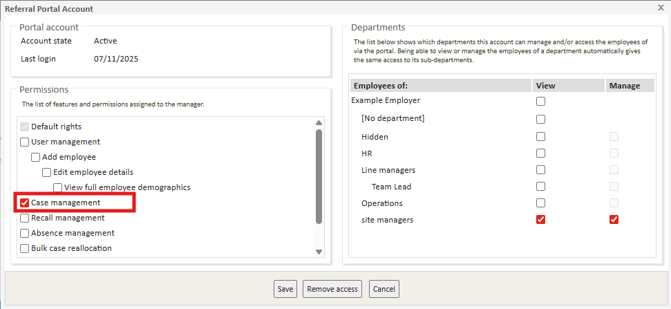
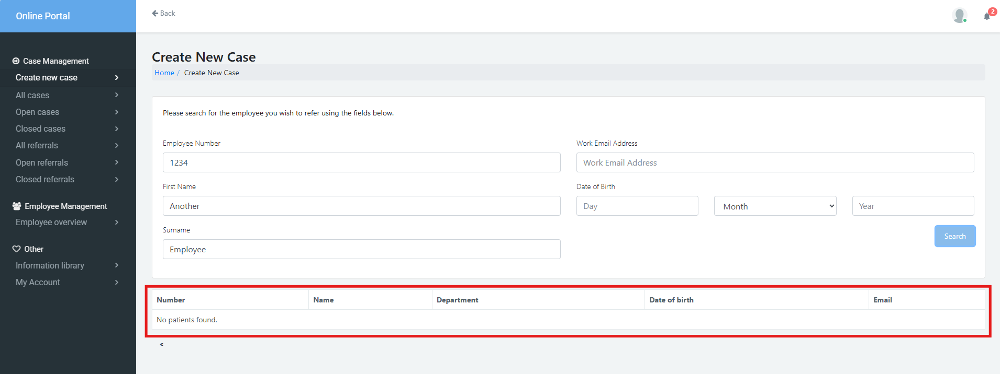
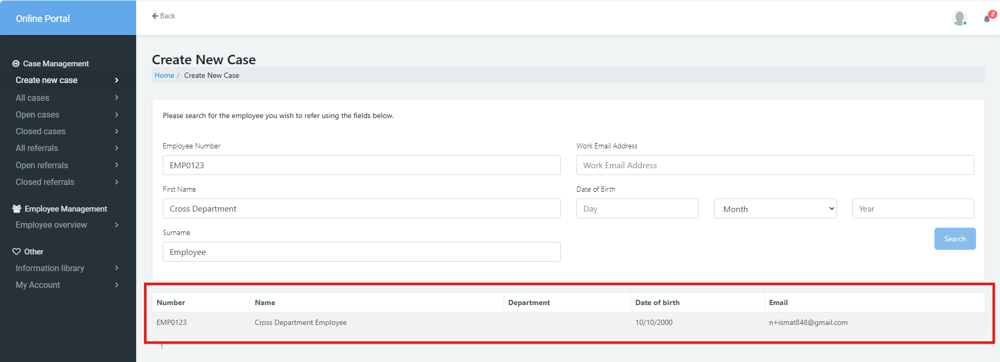
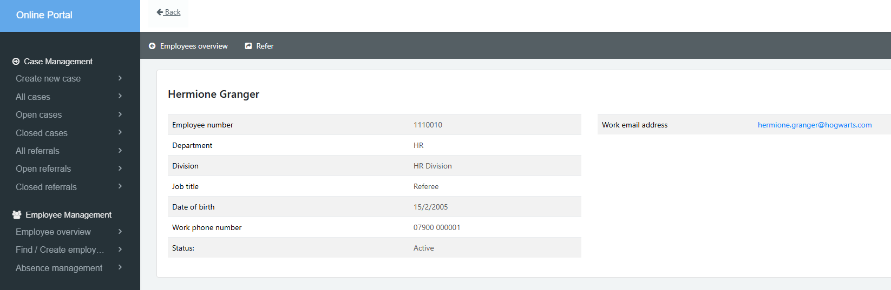

Silent Matching allows referring managers to add employees and see full demographic details. If a match is found, the system silently associates the referral with the existing employee record, preventing duplicate patient entries in Meddbase. However, all users with the Case Management permission are able to do this by default.
Granular controls give administrators greater flexibility over how managers can search for and add employees through the portal. These controls include:
The enhanced cross departmental referral functionality still only allows managers to have access to the employee for the duration of the referral. They are not be able to view other referrals made by other referring managers for that employee.
To enable this feature, please reach out to your Client Success Manager or raise a Support ticket.
The ability to perform a cross department search is controlled at the Chamber level. This means the setting is applied globally across all of the Chamber’s clients using the Manager Portal. If cross-department search is enabled, all clients under that Chamber can perform searches across departments. If it is disabled, none of the clients will have access to this functionality.
This article explains how to:
This article focuses on the behaviour of the feature when only the Case Management permission is granted on a Manager Profile.
Cross-Department Search allows managers with the case management permission to search and refer employees outside of their own department, or, if departments are not used, across the entire company. This functionality ensures that managers can make necessary referrals even when they do not directly manage the employee, while maintaining strict controls over what information they can access.
Cross-Department Search is configured at the Chamber level, meaning it is applied globally to all clients using the portal and cannot be enabled or disabled for individual companies.
To enable this Cross Department Search:


The ability to make referrals within the Referral Portal is governed by the Case Management Permission. Without this permission granted, a manager can not make referrals via the Referral portal. This permission is controlled on the Manager's Patient Record within Meddbase. For more information, see Initial setup Part 1: Work, Employers, Employees, Common Catalogues setup - Occupational Health.

In the OH Portal, when a Manager goes to create a new case in the Referral Portal, five search fields will appear:
*The Date of Birth field is only visible to managers who have the 'View full employee demographics' permission enabled. For more information on Manager Permissions, see Setting Manager Permissions.
In order to complete a full search of employees across departments, they must provide an exact match for the following below:
If a match is not found, "No patients found." will show and the Manager will not be able to process that referral. This indicates to the manager that the employee does not exist. However, the employee may still exist within the Chamber; the manager simply does not have access because the correct demographic details were not provided.

If a match is found, a record will show and the Manager can then make a referral for an employee following the usual process of:

A manager can track a cross-department referral like any other referral within the Referrals tab. Once the referral is closed, they can retrieve correspondence from the Closed Referrals tab.
All active referrals will appear under Open Cases. However, cross-department referrals, once closed, will not appear in Closed Cases. This is because there may be other referrals associated with the same employee from different managers that the user should not be able to see.
If a manager needs to re-refer the same employee, they can either search for the employee again or locate them through the Employee Overview page. In the Employee Overview page, the manager will see a restricted view of the employee, showing only basic demographic information. This differs from employees within their own department, where managers can view and manage all referrals and associated details.
